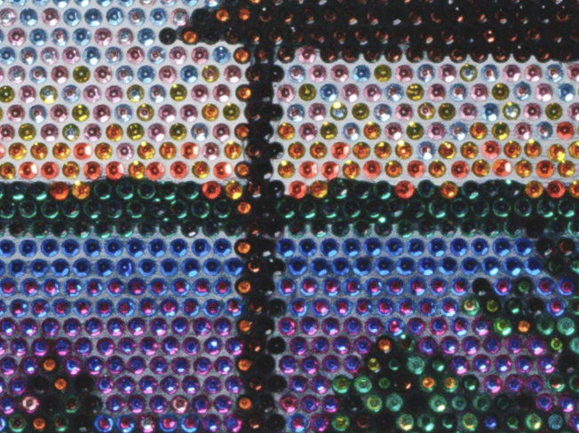
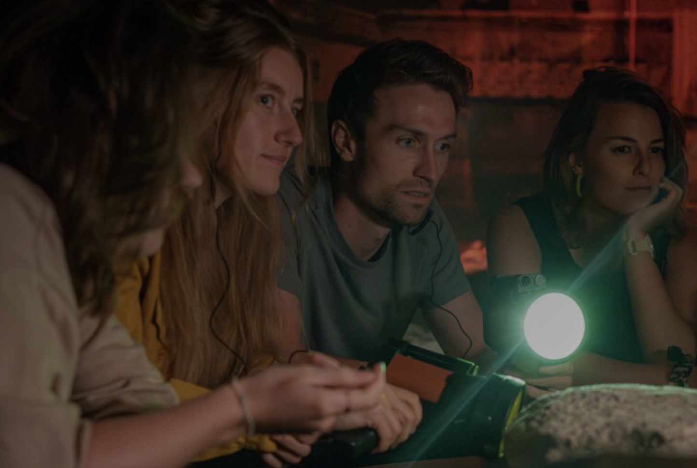

Utereg me staadje
Uteregse weetjes
- Op 2 juni 1122 gaf de Duitse keizer Hendrik V de Utrechters stadsrechten. Daarmee heeft Utrecht het op één na oudste stadsrecht van Nederland.
- De Domtoren van Utrecht is met 112,32 meter de hoogste kerktoren van Nederland. De toren maakte deel uit van de Sint-Maartenskathedraal, ook wel Domkerk genoemd, en werd tussen 1321 en 1382 gebouwd.
- Utrechters hebben een schandalig lekkere megabonbon: het ‘Domtorentje’. Pure chocolade met een chocoladevulling erin en de Domtoren in reliëf erop. Alleen te koop bij Blom in de Zadelstraat.
- Utrecht heette in de Romeinse tijd (!) Trajectum ad Rhenum, wat "oversteekplaats aan de Rijn" betekent. Door de eeuwen heen veranderde de naam via "Ultraiectum" naar het huidige Utrecht.
- De Universiteit Utrecht is een oudje! De opening vond plaats op 26 maart 1636. Hoewel die Dies Natalis geldt als geboortedag, stelde de stad Utrecht al in 1470 voor om een universiteit op te richten.
Centraal Museum
Het Centraal Museum is gelegen in de stad Utrecht.
Het museum heeft een uitgebreide collectie oude en moderne kunst, mode, toegepaste kunst en ook het Nijntje Museum
en het Rietveld Schröderhuis maken deel uit van het Centraal Museum.
Nu te zien: Carel Blotkamp (Zeist, 1945) is schilder, maar gebruikt voornamelijk pailletten als materiaal. Hij gebruikt ze zoals een schilder zijn verf gebruikt: om kleur te geven, accenten te leggen of een sfeer te benadrukken. Met verschillende pailletten over elkaar mengt hij de kleuren, zo ontstaan organische vormen. Het weerkaatsende licht doet de rest.
Ook te zien: Anna Aagaard Jensen - Welkom thuis, lieverd. In deze tentoonstelling onderzoekt de Deense ontwerper Anna Aagaard Jensen de representatie van vrouwen in de kunst en design. Met haar kritische blik op genderstereotypen daagt ze de bezoeker uit om na te denken over hoe vrouwen worden afgebeeld en welke rol deze beeldvorming speelt in onze maatschappij.
Anna Aagaard Jensen (1991) staat bekend om haar provocerende en uitdagende ontwerpen die gendernormen ter discussie stellen. In haar werk combineert ze verschillende materialen en technieken om objecten te creëren die zowel functioneel als conceptueel zijn. Voor deze tentoonstelling heeft ze een serie nieuwe werken gemaakt die specifiek ingaan op de representatie van vrouwen in de kunstgeschiedenis en hedendaagse visuele cultuur. De tentoonstelling omvat sculpturen, installaties en collages waarin Jensen speelt met traditionele vrouwelijke archetypes en deze herinterpreteert vanuit een feministisch perspectief. Door historische beelden te combineren met hedendaagse elementen creëert ze een dialoog tussen verleden en heden, en nodigt ze de bezoeker uit om kritisch na te denken over de manier waarop vrouwen worden gerepresenteerd in kunst en design.
Nu te zien: Carel Blotkamp (Zeist, 1945) is schilder, maar gebruikt voornamelijk pailletten als materiaal. Hij gebruikt ze zoals een schilder zijn verf gebruikt: om kleur te geven, accenten te leggen of een sfeer te benadrukken. Met verschillende pailletten over elkaar mengt hij de kleuren, zo ontstaan organische vormen. Het weerkaatsende licht doet de rest.
Ook te zien: Anna Aagaard Jensen - Welkom thuis, lieverd. In deze tentoonstelling onderzoekt de Deense ontwerper Anna Aagaard Jensen de representatie van vrouwen in de kunst en design. Met haar kritische blik op genderstereotypen daagt ze de bezoeker uit om na te denken over hoe vrouwen worden afgebeeld en welke rol deze beeldvorming speelt in onze maatschappij.
Anna Aagaard Jensen (1991) staat bekend om haar provocerende en uitdagende ontwerpen die gendernormen ter discussie stellen. In haar werk combineert ze verschillende materialen en technieken om objecten te creëren die zowel functioneel als conceptueel zijn. Voor deze tentoonstelling heeft ze een serie nieuwe werken gemaakt die specifiek ingaan op de representatie van vrouwen in de kunstgeschiedenis en hedendaagse visuele cultuur. De tentoonstelling omvat sculpturen, installaties en collages waarin Jensen speelt met traditionele vrouwelijke archetypes en deze herinterpreteert vanuit een feministisch perspectief. Door historische beelden te combineren met hedendaagse elementen creëert ze een dialoog tussen verleden en heden, en nodigt ze de bezoeker uit om kritisch na te denken over de manier waarop vrouwen worden gerepresenteerd in kunst en design.
Dom Under
Met een zaklamp in de hand verken je de archeologische schatten die diep onder de grond verborgen liggen.
Ontdek de fundamenten van het Romeinse fort Traiectum, bewonder middeleeuwse restanten en ervaar meer dan 2000 jaar aan verborgen geschiedenis.
Deze ondergrondse expeditie laat je de lagen van het verleden van Utrecht van dichtbij beleven.
Paleis Lofen voert je terug naar de middeleeuwen, naar de plek waar Utrecht stadsrechten ontving. Hoewel een brand in 1253 het paleis verwoestte, zijn de overblijfselen nog steeds te vinden in de kelders onder het Domplein en de Vismarkt. Tijdens de Tijdreis Paleis Lofen dwaal je door de restanten van dit keizerlijke paleis en beleef je middeleeuws Utrecht.
Wil je investeren in Utrechts erfgoed met maatschappelijk rendement? Stichting Ondergronds Domplein biedt de kans om via een obligatie bij te dragen aan de ontwikkeling van ‘De Onderdompelende Ervaring’ van de historische attractie. De obligatie van € 5.000 is een lening voor 5 jaar en daarvan wordt jaarlijks € 1.000 afgelost. Met de optie om dit ook jaarlijks te schenken met fiscaal voordeel. Over het openstaande bedrag wordt jaarlijks 1,5% rente uitgekeerd.
Wilt u helpen het verborgen keizerlijk Paleis Lofen verder tot leven te brengen? Neem contact op met directeur-bestuurder Tijn Pieren voor meer informatie en de mogelijkheden om deel te nemen.
Paleis Lofen voert je terug naar de middeleeuwen, naar de plek waar Utrecht stadsrechten ontving. Hoewel een brand in 1253 het paleis verwoestte, zijn de overblijfselen nog steeds te vinden in de kelders onder het Domplein en de Vismarkt. Tijdens de Tijdreis Paleis Lofen dwaal je door de restanten van dit keizerlijke paleis en beleef je middeleeuws Utrecht.
Wil je investeren in Utrechts erfgoed met maatschappelijk rendement? Stichting Ondergronds Domplein biedt de kans om via een obligatie bij te dragen aan de ontwikkeling van ‘De Onderdompelende Ervaring’ van de historische attractie. De obligatie van € 5.000 is een lening voor 5 jaar en daarvan wordt jaarlijks € 1.000 afgelost. Met de optie om dit ook jaarlijks te schenken met fiscaal voordeel. Over het openstaande bedrag wordt jaarlijks 1,5% rente uitgekeerd.
Wilt u helpen het verborgen keizerlijk Paleis Lofen verder tot leven te brengen? Neem contact op met directeur-bestuurder Tijn Pieren voor meer informatie en de mogelijkheden om deel te nemen.